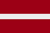

|
Länderinformationen Lettland
1. Das Wichtigste auf einen Blick2. Sehens- und Hörenswertes
3. Politik & Gesellschaft
4. Schmeckenswertes
5. Medien
6. Reisetipps
1. Wissenswertes
|  | Hier haben wir die wichtigsten Zahlen und Fakten zum Land Lettland und
der dort gesprochenen Sprache zusammengetragen. |
Hier haben wir die wichtigsten Zahlen und Fakten zu Lettland (Latvija) und der lettischen Sprache (latviešuvaloda) zusammengetragen.
Die lettische Sprache
Das Lettische gehört zu den ostbaltischen Sprachen, deren Wurzel über die baltischen Sprachen wiederum zu den indoeuropäischen Sprachen gezählt werden kann. Andere indoeuropäische Sprachzweige sind unter anderem der germanische (zum Beispiel Deutsch und Englisch), der slawische (zum Beispiel Russisch und Polnisch) und der nordische (zum Beispiel Dänisch und Schwedisch) Sprachzweig.
Eine weitere noch lebendige baltische Sprache neben dem Lettischen ist das Litauische. Das im Nachbarland Estland gesprochene Estnisch hingegen wird zu den finno-ugrischen Sprachen gezählt.
Im Lettischen wird das lateinische Alphabet verwendet – somit werden Sie beim Erlernen der lettischen Sprache etwas entlastet. Allerdings gibt es ein paar Sonderzeichen, die in dem Grammatikteil unseres Lettisch-Basiskurses erläutert werden.
Auf die Frage "Vai Jūs runājat latviski? – Sprechen Sie Lettisch?" werden Ihnen etwa 1,4 Millionen Menschen mit "Jā – Ja." antworten.
Lettland hat etwa 2,3 Millionen Einwohner, aber nicht alle sprechen Lettisch als Muttersprache. Circa eine Million spricht Russisch als Muttersprache. Dies rührt daher, da Lettland bis 1991 ein Teil der Sowjetunion war. Andere in Lettland gesprochene, jedoch deutlich weniger verbreitete Sprachen sind das Weißrussische, Polnische, Ukrainische und Litauische. Einige von diesen Sprachen können Sie sich auch in unserem Sortiment unter www.sprachenlernen24.de erwerben.
Seit der lettischen Mitgliedschaft in der Europäischen Union fielen zahlreiche Reisebeschränkungen und viele Letten verließen das Land, um im Ausland zu leben, zu arbeiten oder zu studieren.
Seit dem 1. Mai 2004 (Beginn der lettischen EU-Mitgliedschaft) ist Lettisch eine der offiziellen Amtssprachen der Europäischen Union.
 Hoch- und Umgangssprache
Hoch- und Umgangssprache
Im Lettischen, wie in den meisten Sprachen, gibt es Dialekte. Nur die Anzahl der Dialekte im Lettischen ist nicht besonders groß: es wird lediglich drei Dialekte gezählt. Der Dialekt, auf dem sich die lettische Standardsprache basiert, ist der Mitteldialekt. Er wird in den mittleren Gebieten Lettlands gesprochen. Der hochlettische Dialekt, der in Ostlettland gesprochen wird, unterscheidet sich sehr stark von der Standardsprache. Als dritter Dialekt gilt der an der Küste gesprochene livische Dialekt, der allerdings wegen außerordentlich wenigen Sprechern vom Aussterben bedroht ist.
Nun aber zu Lettland. Im folgenden Abschnitt finden Sie interessante Fakten zu Lettland sowie Informationen zu landestypischen Begebenheiten.
 Einwohner
Einwohner
In Lettland leben etwa 2,3 Millionen Einwohner und es ist damit in etwa so bevölkerungsreich wie die Städte München und Köln zusammen. Die Mehrheit der Bevölkerung ist lettisch (etwa 60 Prozent), daneben lassen sich in Lettland an Minderheiten vor allem Russen finden. Auch gibt es Weißrussen und Polen, aber ihre Anzahl ist nicht groß. Die meisten Letten sprechen neben Lettisch noch Russisch oder oft auch Deutsch.
Das Durchschnittsalter der lettischen Bevölkerung liegt bei fast 39 Jahren und ist damit um einige Jahre geringer als in Österreich oder Deutschland.
Die durchschnittliche Lebenserwartung liegt bei etwa 66 Jahren (Männer) und 76 Jahren (Frauen).
 Fläche
Fläche
Das lettische Staatsgebiet umfasst eine Gesamtfläche von etwa 65.000 km². Davon beträgt die Landfläche etwa 64.000 km² und die Wasserfläche etwa 1.000 km². Somit ist Lettland etwa eineinhalbmal so groß wie die Schweiz oder ziemlich genau so groß wie sein Nachbarland Litauen.
Die Grenznachbarn von Lettland sind im Norden Estland, im Osten Russland, im Südosten Weißrussland und schließlich im Süden Litauen. Im Westen bildet die Ostsee die Grenze, wo Lettland mit Schweden eine gemeinsame Meeresgrenze hat.
Interessant finden Sie vielleicht, dass die Bevölkerungsdichte in Lettland etwa bei 35 Menschen pro km² liegt, was eine deutlich dünnere Besiedlung bedeutet als etwa in Deutschland.
 Währung
Währung
In Lettland wird mit dem Lats (lats, Abk.: LVL) gezahlt. Dieser ist wiederum unterteilt in 100 Santims (santims).
Einen aktuellen Wechselkurs von Lats zu Euro können wir Ihnen an dieser Stelle freilich nicht bieten, dieser lässt sich jedoch im Internet mit wenig Aufwand bequem finden (geben Sie einfach bei einer Suchmaschine den Begriff "Währungsrechner" ein). Oder Sie fragen bei Ihrer Bank danach.
 Ökonomische Situation
Ökonomische Situation
Im direkten Vergleich mit Deutschland, Österreich oder der Schweiz verfügt Lettland über einen deutlich geringeren Lebensstandard, wenngleich die lettische Wirtschaft neuerdings sehr hohe Wachstumsraten erlebt. Von einem armen Land kann jedoch nicht gesprochen werden, vor allem die Region in und um Riga ist im Vergleich zu den ländlichen Gebieten in Lettland relativ wohlhabend.
Hauptexportgüter des Landes sind moderne Industrieprodukte (vor allem Metallprodukte), Holzprodukte (Holz und Möbel) und Textilien.
Den deutlich größten Anteil der Beschäftigung nimmt in Lettland der Dienstleistungssektor mit fast 60 Prozent ein. In der Industrie ist etwa 30 Prozent der Bevölkerung beschäftigt. Rund 10 Prozent leben von Landwirtschaft.
 Zeitzone
Zeitzone
Lettland liegt nicht in der selben Zeitzone wie Österreich, Deutschland und die Schweiz. Die Zeitverschiebung beträgt eine Stunde: wenn Sie mittags um 12 Uhr mittagessen gehen, haben die Menschen in Lettland eventuell bereits gegessen, dort ist es schon 13 Uhr.
In Lettland wird zur Sommerzeit die Uhr ebenfalls um eine Stunde vorgestellt.
Im nächsten Kapitel haben wir einige ausgesuchte Reiseempfehlungen zusammen gestellt.